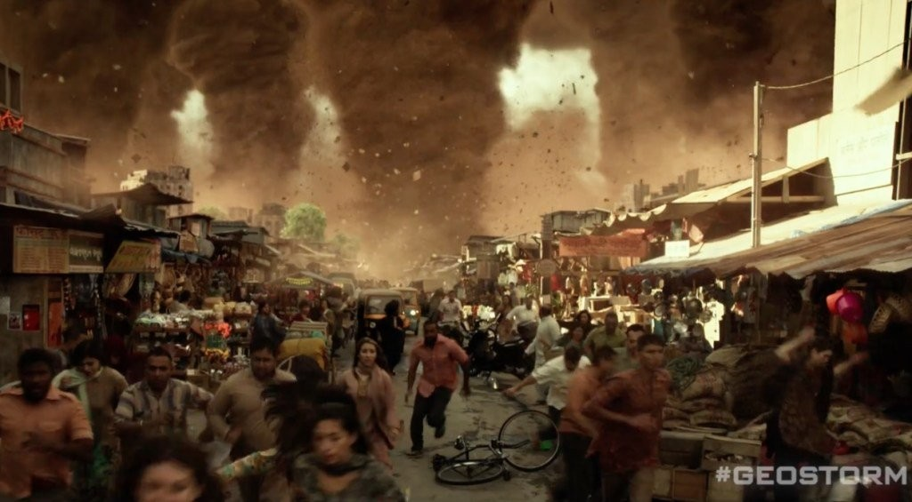
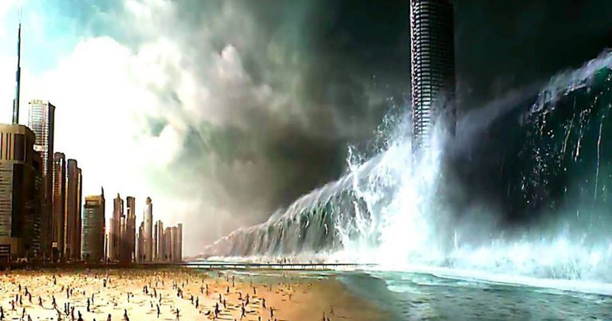
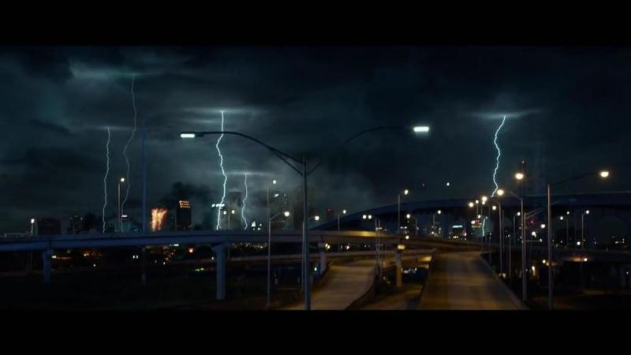
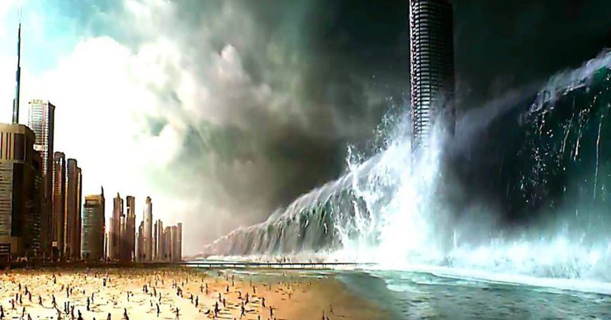
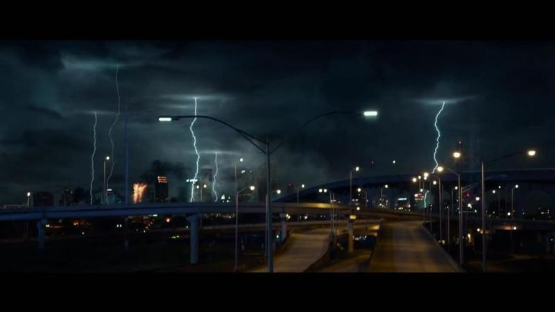

Geo-tormenta (Geostorm)

Resumen:
Cuando un sistema satelital que controla el clima se descompone, el ex-científico de la NASA Jake Lawson (Gerard Butler) deberá volver al espacio exterior para resolver el problema. Jake se encuentra con una bien planeada conspiración que incluye al secretario de Estados Unidos Leonard Dekkom (Ed Harris), y que podría acabar con la vida en la Tierra. Ahora, él y su hermano Max (Jim Sturgess) deberán salvar al mundo de una catástrofe global, con la ayuda de Sarah Wilson (Abbie Cornish), una agente del servicio secreto y prometida de Max.
Trailers:
Imágenes:




